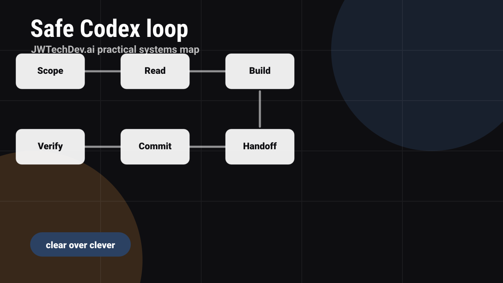

What infrastructure makes AI-assisted coding safe for real projects?
A practical infrastructure workflow for AI-assisted projects: define the lane, read the repo, use approval gates, verify in browser, commit intentionally, and keep a status trail.

Quick answer
AI-assisted coding is safest when the project has a clear lane, trusted context, scoped files, approval gates, verification steps, and a definition of done. Move quickly on reversible drafting and code work, but stop for human approval before high-impact actions.
AI-assisted coding is strongest with boundaries
AI-assisted coding gets better when the work is specific. "Build my site" is too broad. "Update the article section, preserve the existing design system, add six launch articles, verify links, and do not touch DNS" is useful.
The better the lane, the safer the execution. A lane tells the tool what brand it owns, which files matter, where outputs belong, what approval gates exist, and what done means.
The safe-work loop
1. Scope
Name the brand, repo, files, output path, and approval gates.
2. Read
Inspect the current code, style, docs, and existing patterns before editing.
3. Build
Make the smallest coherent change that satisfies the task.
4. Verify
Run local checks, inspect the browser, and test the user path.
5. Commit
Commit only scoped work with a clear message.
6. Handoff
Record what changed, what was verified, and what still needs approval.
Approval gates make automation practical
Approval gates are not a lack of trust. They are how real systems stay useful. AI-assisted tools can draft content, refactor frontend code, create local runbooks, build static pages, and verify previews. They should stop before sending messages, changing DNS, exposing storage, charging payments, deleting data, or publishing anything that has not been approved.
That split lets the system move quickly while keeping Josh in control of risk.
Why infrastructure experience helps
People with infrastructure experience naturally ask the right questions: What can this access? What writes happen? Where are logs? What breaks if the machine sleeps? What is the rollback plan? What is the cost?
That is why Codex is not only a coding tool here. It becomes part of an operating system for projects.
A reusable brief for real work
Use this when starting a task: "You own the JWTechDev.ai lane. Read the repo before editing. Preserve existing design patterns. Do not delete files. Do not touch DNS, backend exposure, payment, outbound sends, or public storage without approval. Implement the smallest coherent change, verify it locally, update durable notes, then summarize changed files and blockers."
Safe build lane picker
What kind of work are you about to delegate?
AI-assisted build safety checklist
0 of 6 checkedFAQ
Can AI-assisted tools work overnight?
They can work through scoped, reversible tasks and prepare drafts, code, and runbooks. High-impact actions should remain gated for human approval.
Should work split into separate lanes?
For multi-step work, yes. Split by function, then run an integration wave to merge and verify the outputs.
What is the biggest risk?
Vague authority. The fix is boundaries: allowed files, forbidden actions, approval gates, and clear verification.
Want the working resource?
Request the Safe Build Operations Field Guide to set up infrastructure-aware AI-assisted project work.
Request access